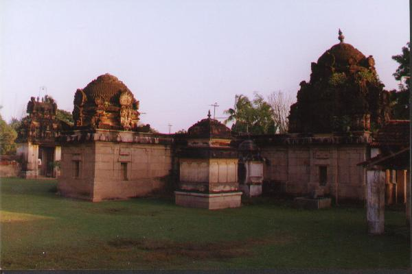
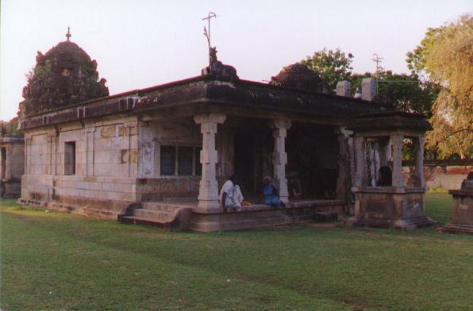

vaṉṉiyūr
- Identifier: KT062
- Not to be confused with: KV22
- Modern Name (NIC):
- Modern Name (M.I.): vaṉṉiyūr
- Modern Name (Govt Press): _aṉṉiyūr
- Modern Name: tiruvaṉṉiyūr
- Other name: aṉṉūr (?)
- Modern District & Taluk: tiruvārūr DT (naṉṉilam TK or kuṭavācal TK)
- Old administrative location: Tanjore DT (Nunnilam TK)
- Nearby town:
- Visit date: 12 january 2000
- GPS reading: 10 deg. 57.92' & 79 deg. 33.58'
- Railway station:
- Longit. 79 deg. 34'; Latit. 10 deg. 58' [KT062]
- C.D.Maclean-3: entry: , p. , col. , lines
[ , lat. deg. ', long. deg. ']
- Location: according to PK: Cōḻa Nāṭu, Kāvēri Teṉ Kari (KT062)
- Name inside hymns:
- Name inside PK:
- Rank inside third volume of PIFI: 250
- Rank inside Civastala Mañcari: 249
- Rank on PY576 map:
- Total number of patikam-s: 1
- Appar: 1 patikam
5 pictures taken on 2000 january 12th (by G.Ravindran)





- Patikam 5_26